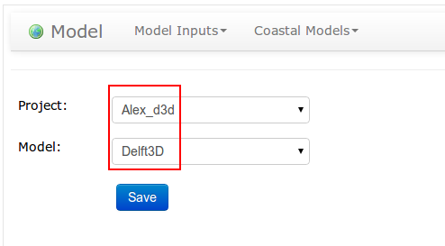

4. Submit a job step by step¶
4.1. teakwood workflow¶

Teakwood provides multiple ways to help our user to use teakwood.
1) Magical wand. Each page on the top right, there is a magical wand; it provides you detailed info of this page.

2) Video tutorial. Please navigate to this page to see the video tutorial.
3) Step by step screen shots tutorial. This page will give you a screen shot tutorial.
4)Post topic on teakwood forum if you have questions or encountered problems. Please navigate to this web page to visit our forum.
4.2. Handle your job in seven steps¶
Since the workflow provided us a big picture of how Teakwood works, here are seven steps that can help us run a general teakwood job.
4.2.1. Create a project¶
In the first step, you will need to creating a project, Teakwood will generate an file management directory for you automatically.

4.2.2. Select a model¶
After project creating, you need to chose a model(e.g. Delft3D) for job running. We provide five models so far.


{kind=link}
4.2.4. Insert your input parameters¶
You can submit your input parameters either by upload input files or fill in input forms:


4.2.5. Submit your job¶
Simply submit your job, and your job will be in the waiting list and ready to go.
4.2.6. Check status¶
Check status during the Job running from Teakwood control panel. All your jobs are under control.
4.2.7. Post-process¶
In this step, we provide output data visualization and comparison. Details please see Chapter 5. Data Observation segment in the directory.